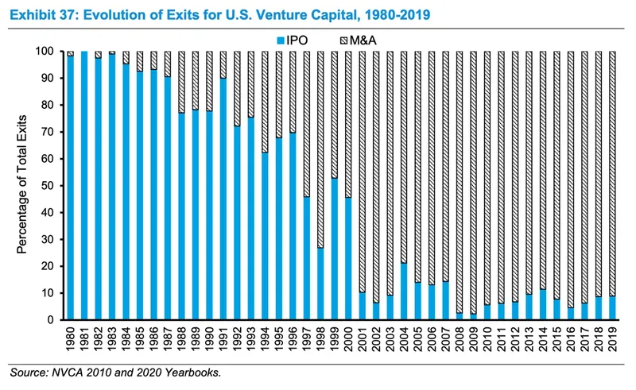

Considering M&A: why and when?
This is part 2 in our Deep Dive on M&A for startup founders.
--
It seems strange to think about “preparing” for M&A as an early stage founder. After all, isn’t it a long time away? And isn’t an IPO the bar all VC-backed founders are aiming for? Isn’t thinking about, let alone mentioning, potentially being acquired a faux pas in VC circles?
We think this view is antiquated and short sighted. Of course, we are not trying to lower anyone’s expectations - we love a good IPO (or direct listing, or SPAC) as much as the next VC. But we think that being aware of the potential dynamics around an eventual exit, and M&A’s role therein, is both realistic and opportunistic.
Why realistic? Because very few companies actually become public. In fact, there is a decades-long trend towards fewer IPOs, with M&A being by far the primary (~90%) form of exit for VC-backed startups [1]. To learn more, we encourage readers to take a look at Michael Mauboussin’s excellent report from mid-2020: Public to Private Equity in the United States: A Long-Term Look. On this specific topic, the key exhibit is on page 45:

Given this data, it would be foolhardy for founders to believe they are 100% destined for public greatness. We encourage and try to help founders to get to a blockbuster IPO, but we also want them to be ready for possible non-public scenarios.
Why opportunistic? We encourage our founders to prepare and be ready for all eventualities. As we’ll see below, an acquisition does not mean you have failed - in fact, it can be the exact opposite. Having the right mindset and preparation can mean the difference between optimizing a process if/when it presents itself and rushing into a half-baked situation.
How may M&A opportunities present themselves? As you can imagine, M&A situations can run the gamut from trying to engineer an “acquihire” all the way to fending off Big Tech giants hell-bent on throwing money at you. The spectrum can be boiled down to three broad scenarios:
- It’s your only option -this is the situation that you will hopefully not find yourself in. In this situation, you’ve reached an impasse in your journey and have to fabricate interest in your company or assets. Hopefully you will have something valuable that will interest a buyer, but it could be as dire as just trying to save them the time it would take to hire a similar team.
- It’s your best strategic option -you may be doing well, but you see a limit to how far you may be able to go it alone. Or you see the potential in combining with a larger entity and taking advantage of their strengths (e.g., technology, distribution, capital) in order to maximize your impact.
- You just can’t say no - you are likely doing great, you are worth a lot of money to an acquirer and they will try to make it worth your while to combine forces. They may even make it so that you, or your Board, find it impossible to walk away.
In all three situations, as different as they are, knowing the key dynamics of M&A and being prepared are extremely important to maximizing your opportunities.
So what should you do? We’ll get into this in the next few posts. But one important place to start is to identify your universe of possible acquirers - you should be aware of who they are. Usually, your potential acquirers will be (in rough order of likelihood):